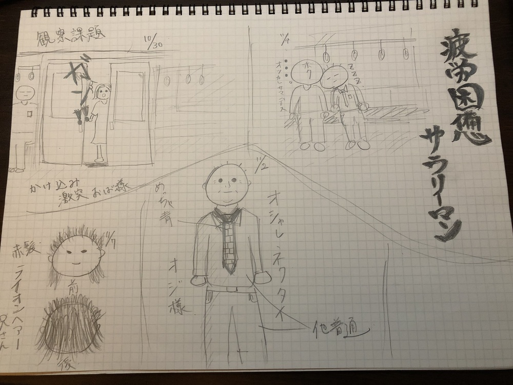

・10月30日 かけこみ激突おば様
千葉県内にて観測。電車のドアが締まる中、勢いよくかけこみ乗車。結局ドアに衝突した。一度ドアが閉まったものの、
駅員の配慮で再びドアが開き、乗車できた。すごい気まずそうな顔。次から気をつけてください。
・11月2日 オシャレネクタイおじさま
大学から千葉県の実家へ帰宅途中の電車内にて。スーツにスラックスといった、一見よくみるサラリーマンだが、
ネクタイだけは違った。鮮やかな青色の生地に、布袋寅泰のギターみたいな柄。ネクタイで個性を出していくスタイル。すごくかっこいい。
・11月7日 赤髪ライオンヘアー兄さん
キャンパス周辺を散歩中に遭遇。真っ赤に染めた髪の毛を、まるでライオンのたてがみの様に立ち上げた20代くらいの男性。
故意でやっているのかは定かではないが、とても目立っていた。
・11月9日 疲労困憊サラリーマン
電車で帰宅途中、品川駅で乗ってきた30代サラリーマン。見るからに疲れてる。僕の隣に座ると、睡眠し始めた。
しばらくすると僕の左肩にはサラリーマンの頭が。そのまま30分、僕の目的地まで肩に寄りかかったまま寝続けるサラリーマン。
最寄りに到着したので立ち上がる僕。はっと目覚め、一緒に立ち上がるサラリーマン。最寄り一緒なんかい。気まず。